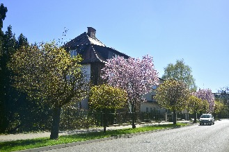
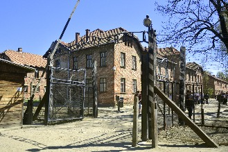
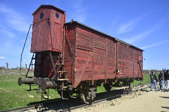

Oświęcim
 A cidade de Oświęcim, muito mais famosa por seu nome alemão, Auschwitz, tem uma rica história que data do início do Estado Polonês, sendo citada pela primeira vez em 1117.Após a Partição da Polônia de 1138, o Duque Casimir II o Justo anexou a cidade ao Ducado de Opole em 1179.
A cidade foi destruída em 1241 durante a invasão mongol da Polônia.
Por volta de 1272 a recém reconstruída cidade de Oświęcim foi agraciada com uma carta municipal nos moldes de Lwówek Śląski (uma variação polonesa dos Direitos de Magdeburg). A carta foi confirmada em 3/9/1291.
Em 1281, a área de Oświęcim tornou-se parte do recém estabelecido Ducado de Cieszyn, e em 1315, um Ducado Independente de Oświęcim foi estabelecido.
Em 1327, John I, Duque de Oświęcim juntou seu ducado ao Ducado de Zator e logo após seu estado se tornou vassalo do Reino da Boemia, onde permaneceu por mais de um século.
Em 1445, o ducado foi dividido em 3 partes diferentes: os ducados de Oświęcim, Zator e Toszek. Em 1457 o rei polonês Casimir IV Jagiellon comprou os direitos para Oświęcim.
Em 25/2/1564, o rei Sigismund II Augustus emitiu uma nota integrando os antigos ducados de Oświęcim e Zator ao Reino da Polônia. Ambas as áreas foram integrados à voivodia de Cracóvia, formando o Condado da Silésia.
A cidade mais tarde se tornou um dos centros da cultura Protestante na Polônia.
Como outras partes da voivodia (província/estado) da Pequena Polônia, Oświęcim prosperou no período como Era Dourada Polonesa. Os bons tempos terminaram em 1655, durante a catastrófica invasão sueca da Polônia.
Oświęcim foi incendiada e depois disso, caiu em declínio.
Em 1772 foi anexada pelo Império de Habsburg, como parte do Reino da Galícia e Lodomeria, onde permaneceu até 1918.
Após o Congresso de Viena de 1815, a cidade foi fechada para as fronteiras tanto do Congresso da Polônia (controlado pela Rússia) e do Reino da Prússia.
Na guerra de 1866 entre Áustria e a Confederação do Norte Alemão liderada pela Prússia, uma batalha de cavalaria foi travada na cidade, com forças austríacas derrotando os invasores prussianos.
Na 2ª metade do Século 19, Oświęcim se tornou um importante cruzamento ferroviário. Durante o mesmo período, a cidade ficou em chamas várias vezes, como no incêndio de 23/8/1863, quando 2/3 da cidade foram destruídos, incluindo a prefeitura e 2 sinagogas.
Uma nova prefeitura foi construída entre 1872 e 1875.
Em outro incêndio em 1881, a paróquia da cidade, uma escola e um hospital viraram cinzas.
Em 1917/18 um novo distrito, chamado Nowe Miasto, foi fundado.
Após a 1ª Guerra Mundial a cidade se tornou parte da 2ª República da Polônia como parte da Voivodia de Cracóvia (Województwo Krakowskie).
Até 1932, Oświęcim era sede de um condado, mas em 1/4/1932, o Condado de Oświęcim foi dividido entre os condados de Wadowice e de Biala Krakowska.
Os anos 1940 não foram nada bons para a cidade.
Haviam aproximadamente 8.000 judeus na cidade às vésperas da 2ª Guerra Mundial, o que era mais da metade da população. Com a invasão nazista, eles anexaram a área à Alemanha em 1939.
Em 1940, nazistas usaram trabalho escravo para construir uma nova subdivisão para abrigar guardas de Auschwitz e funcionários, e decidiram construir uma grande planta química da IG Farben em 1941 no extremo leste da cidade.
Os residentes poloneses de vários bairros foram forçados à abandonar suas casas, pois os invasores alemães queriam manter a área limpa ao redor do campo de concentração de Auschwitz.
Eles planejaram 40km² de área livre ao redor do campo, e expulsaram residentes poloneses em 2 etapas, em 1940 e em 1941. Todos os residentes do distrito de Zasole foram forçados a abandonar suas casas. Nos bairros de Plawy e Harmeze, mais de 90% das construções foram destruídas e os residentes de Plawy foram transportados para Gorlice e largados lá para se virarem sozinhos. No total, cerca de 17.000 pessoas em Oświęcim e nas vilas próximas foram forçadas a abandonar seus lares, e 8 vilas foram riscadas do mapa, reduzindo a população da cidade para 7.600 em Abril de 1941.
Após anos de funcionamento do campo de concentração de Auschwitz, seu funcionamento chegou ao fim em 27/1/1945, quando o Exército Vermelho chegou no campo.
Eles abriram 2 campos temporários para prisioneiros alemães no complexo de Auschwitz-Birkenau. O campo soviético de Auschwitz existiu até o Outono 1945, e o campo de Birkenau durou até a Primavera de 1946. Cerca de 15.000 alemães ficaram presos no local.
Além disso, havia um campo da Polícia Secreta Comunista (Urząd Bezpieczeństwa) próximo à estação de trem no complexo do antigo "Gemeinschaftslager". Seus prisioneiros eram membros da NSDAP, Hitlerjugend e da BDM, bem como civis alemães, os volksdeutsche, e os Silésios que eram suspeitos de serem desleais à Polônia.
Após as mudanças territoriais da Polônia que se sucederam ao final da 2ª Guerra Mundial, novos complexos de casas se desenvolveram com grandes construções retangulares de concreto.
A indústria química se tornou a maior empregadora da cidade e nos anos seguintes, uma indústria de serviços e negócios floresceu.
Em 1952, o Condado de Oświęcim foi recriado, e a cidade pertenceu à voivodia de Cracóvia até 1975.
Entre 1975 e 1999, foi parte da voivodia de Bielsko-Biała.
Em 1979, Oświęcim foi visitada pelo Papa João Paulo II, e em 1/9/1980, um escritório local do Solidariedade (1º sindicato não comunista da Polônia) foi criado na fábrica química.
No meio dos anos 1990, após o fim do comunismo, os empregos na fábrica química (antiga I.G. Farben, renomeada para Dwory S.A.) foi reduzido de 10.000 da era comunista para apenas 1.500 pessoas.
Em 28/5/2006, a cidade foi visitada pelo Papa Bento XVI.
A cidade tem 38.000 habitantes, e atualmente tem no turismo uma importante fonte de renda.
Como fica a 65km de Cracóvia, visitas ao Campo de Concentração de Auschwitz são uma day trip bastante popular.
O clima
O clima em Oświęcim é do tipo continental úmido. Os verões são quentes, com temperaturas médias que variam entre 20 e 25°C, e os invernos são frios e nevados, com temperaturas médias que variam entre -5 e -10°C. A primavera e o outono são agradáveis, com temperaturas médias que variam entre 10 e 15°C.As precipitações são distribuídas ao longo do ano, sendo mais intensas no verão, com uma média de cerca de 100mm por mês. A neve é comum no inverno, com uma média de cerca de 20 a 30cm de neve acumulada durante os meses de dezembro a março.
Os ventos predominantes em Oświęcim são de noroeste e oeste, trazendo massas de ar polar que podem tornar o clima muito frio no inverno. No entanto, durante o verão, ventos do sul e do leste trazem massas de ar quente e úmido do Mediterrâneo e do Mar Negro, resultando em temperaturas mais elevadas e níveis mais altos de umidade.
Como chegar
A melhor opção para se chegar à cidade é a partir de Cracóvia. Assim você aproveita também o que Cracóvia tem a oferecer. Saindo de lá, as opções são as seguintes:* Trem: a maneira mais fácil e conveniente de chegar a Oświęcim saindo de Cracóvia é de trem. Há vários horários partindo da estação central de Cracóvia para Oświęcim diariamente. A viagem leva cerca de 1 hora e os bilhetes podem ser comprados na própria estação ou online.
* Ônibus: várias empresas de ônibus oferecem serviço entre as 2 cidades, com viagens regulares que duram de 1 hora e meia à 2 horas. Os bilhetes podem ser comprados na estação de ônibus ou online.
* Táxi ou carro: é possível ir de ou carro particular. A viagem leva em média 1 hora, dependendo do tráfego. Você pode contratar um táxi ou alugar um carro em Cracóvia.
Saindo de Varsóvia, as opções são as seguintes:
* Trem: vários trens partem de Varsóvia para Oświęcim diariamente. A viagem leva de 3 a 4 horas e você pode encontrar informações sobre horários e preços de trem na estação de trem ou online.
* Ônibus: há várias empresas de ônibus com linhas entre Varsóvia e Oświęcim, com viagens diretas e regulares que duram de 4 à 5 horas. Você pode encontrar informações sobre horários e preços de ônibus nas estações de ônibus ou online.
* Avião: o aeroporto mais próximo de Oświęcim é o Aeroporto Internacional de Cracóvia-John Paul II, que fica a cerca de 50 km de distância. Você pode voar de Varsóvia para Cracóvia e depois pegar um trem, ônibus ou táxi para Oświęcim.
* Carro: a distância entre as 2 cidades é de aproximadamente 310km e a viagem leva de 3 à 4 horas, dependendo do tráfego.
Como se locomover
Oświęcim é uma cidade pequena e a maioria das atrações turísticas e locais de interesse estão em distâncias percorríveis a pé. Mas pode acontecer do clima não estar propício à uma caminhada, ou de você ser ou estar acompanhado de alguma pessoa com dificuldade em mobilidade. Se você precisar se locomover pela cidade com alguma limitação, existem algumas opções de transporte público:* Ônibus: Oświęcim possui um sistema de ônibus que conecta a cidade a outras áreas da região. Existem várias linhas de ônibus que circulam pela cidade e pelos arredores, com tarifas acessíveis. Os horários dos ônibus variam dependendo da linha e podem ser encontrados nos pontos de ônibus ou online.
* Táxi: há vários táxis disponíveis em Oświęcim. Você pode chamar um táxi por telefone ou encontrá-los em pontos de táxi designados em toda a cidade.
* Bicicleta: Oświęcim tem um sistema de compartilhamento de bicicletas chamado "Nextbike", que permite que os usuários aluguem bicicletas por um curto período de tempo. Existem estações de bicicleta localizadas em toda a cidade e o sistema é fácil de usar.
Oświęcim é segura?
Oświęcim é considerada uma cidade segura para os visitantes. A cidade é pequena e possui baixas taxas de criminalidade em comparação com outras cidades polonesas maiores. No entanto, como em qualquer lugar, é importante tomar precauções básicas de segurança para garantir uma viagem segura e agradável.Esteja ciente dos seus pertences pessoais, como carteira, celular, câmera e bolsa.
Evite áreas mal iluminadas e desertas à noite.
A cidade pode ficar movimentada, especialmente durante horários de pico. Preste atenção ao atravessar a rua e use as faixas de pedestres quando disponíveis. Motoristas poloneses respeitam bastante a faixa de pedestres.
Respeite as leis e costumes locais, como não beber álcool em áreas públicas ou fumar em lugares públicos.
As atrações de Oświęcim
Campo de Concentração de Auschwitz
Campo de Concentração de Auschwitz (Auschwitz Concentration Camp / Obóz koncentracyjny Auschwitz /
Konzentrationslager Auschwitz)
O Campo de Concentração de Auschwitz foi um complexo de mais de 40 campos de concentração e extermínio
operados pelos nazistas durante a 2ª Guerra Mundial.
Na época de sua operação consistia de Auschwitz I, o campo principal, Auschwitz II-Birkenau, um campo de concentração e extermínio construído com câmaras de gás; Auschwitz III-Monowitz, um campo de trabalhos criado para a equipe de uma fábrica da IG Farben; e dúzias de subcampos.
Após a invasão alemã da Polônia em Setembro de 1939, a Schutzstaffel (SS) converteu Auschwitz I, um quartel do exército, em um campo de prisioneiros de guerra para presos políticos poloneses.
Os primeiros a chegar, criminosos alemães trazidos ao campo em Maio de 1940 como funcionários, estabeleceram a reputação do campo pelo sadismo, agressões, torturas e execução de prisioneiros pelas razões mais banais.
As primeiras execuções com gás, de prisioneiros poloneses e soviéticos, aconteceram no bloco 11 de Auschwitz I por volta de Agosto de 1941.
A construção de Auschwitz II começou no mês seguinte, e de 1942 até o final de 1944 trens de carga traziam judeus de todos os países ocupados pela Alemanha para as câmaras de gás.
Das 1,3 milhão de pessoas enviadas à Auschwitz, 1,1 milhão morreram.
A contagem dos mortos inclui 960.000 judeus (865.000 dos quais foram mortos com gás instantes após suas chegadas), 74.000 poloneses não-judeus, 21.000 romas (ciganos), 15.000 prisioneiros de guerra soviéticos e cerca de 15.000 outros europeus.
Os que não foram para as câmaras de gás morreram de fome, exaustão, doenças, execuções individuais ou espancamentos. Outros foram mortos durante experimentos médicos.
Pelo menos 802 prisioneiros tentaram escapar, dos quais 144 conseguiram.
Em 7/10/1944, duas unidades do Sonderkommando, que consistiam de prisioneiros que operavam as câmaras de gás, tentaram um levante sem sucesso. Apenas 789 funcionários (não mais do que 15%) encarou um julgamento; vários deles, incluindo o comandante do campo Rudolf Höss, foram executados.
A omissão dos aliados em agir após os primeiros relatos das atrocidades do campo, seja por bombardear o campo em si, ou por destruir as linhas férreas que transportavam os prisioneiros, é até hoje motivo de controvérsia.
Com a aproximação do Exército Vermelho em Janeiro de 1945, próximo do final da Guerra, a SS mandou a maior parte da população do campo para oeste em uma marcha da morte para campos na Alemanha e na Áustria.
As tropas soviéticas entraram no campo em 27/1/1945, um dia que desde 2005 é comemorado como Dia Internacional da Lembrança do Holocausto.
Nas décadas seguintes à guerra, sobreviventes como Primo Levi, Viktor Frankl e Elie Wiesel escreveram memórias de suas experiências, e o campo se tornou um símbolo dominante do Holocausto.
Em 1947 a Polônia fundou o Museu Estatal de Auschwitz-Birkenau em Auschwitz I e II, e em 1979 o complexo foi listado como Patrimônio da Humanidade pela UNESCO.
A maioria dos visitantes estrangeiros chega ao local através de uma day trip saindo de Cracóvia. É uma boa opção, mas o melhor, e mais barato, é você pegar um trem na estação de Cracóvia até a estação de Oświęcim, e de lá, seguir uns 2 km até o campo de Auschwitz. Não se preocupe com o deslocamento entre Auschwitz I e Auschwitz II-Birkenau, já que há ônibus expresso gratuitos que levam de um para o outro.
Na época de sua operação consistia de Auschwitz I, o campo principal, Auschwitz II-Birkenau, um campo de concentração e extermínio construído com câmaras de gás; Auschwitz III-Monowitz, um campo de trabalhos criado para a equipe de uma fábrica da IG Farben; e dúzias de subcampos.
Após a invasão alemã da Polônia em Setembro de 1939, a Schutzstaffel (SS) converteu Auschwitz I, um quartel do exército, em um campo de prisioneiros de guerra para presos políticos poloneses.
Os primeiros a chegar, criminosos alemães trazidos ao campo em Maio de 1940 como funcionários, estabeleceram a reputação do campo pelo sadismo, agressões, torturas e execução de prisioneiros pelas razões mais banais.
As primeiras execuções com gás, de prisioneiros poloneses e soviéticos, aconteceram no bloco 11 de Auschwitz I por volta de Agosto de 1941.
A construção de Auschwitz II começou no mês seguinte, e de 1942 até o final de 1944 trens de carga traziam judeus de todos os países ocupados pela Alemanha para as câmaras de gás.
Das 1,3 milhão de pessoas enviadas à Auschwitz, 1,1 milhão morreram.
A contagem dos mortos inclui 960.000 judeus (865.000 dos quais foram mortos com gás instantes após suas chegadas), 74.000 poloneses não-judeus, 21.000 romas (ciganos), 15.000 prisioneiros de guerra soviéticos e cerca de 15.000 outros europeus.
Os que não foram para as câmaras de gás morreram de fome, exaustão, doenças, execuções individuais ou espancamentos. Outros foram mortos durante experimentos médicos.
Pelo menos 802 prisioneiros tentaram escapar, dos quais 144 conseguiram.
Em 7/10/1944, duas unidades do Sonderkommando, que consistiam de prisioneiros que operavam as câmaras de gás, tentaram um levante sem sucesso. Apenas 789 funcionários (não mais do que 15%) encarou um julgamento; vários deles, incluindo o comandante do campo Rudolf Höss, foram executados.
A omissão dos aliados em agir após os primeiros relatos das atrocidades do campo, seja por bombardear o campo em si, ou por destruir as linhas férreas que transportavam os prisioneiros, é até hoje motivo de controvérsia.
Com a aproximação do Exército Vermelho em Janeiro de 1945, próximo do final da Guerra, a SS mandou a maior parte da população do campo para oeste em uma marcha da morte para campos na Alemanha e na Áustria.
As tropas soviéticas entraram no campo em 27/1/1945, um dia que desde 2005 é comemorado como Dia Internacional da Lembrança do Holocausto.
Nas décadas seguintes à guerra, sobreviventes como Primo Levi, Viktor Frankl e Elie Wiesel escreveram memórias de suas experiências, e o campo se tornou um símbolo dominante do Holocausto.
Em 1947 a Polônia fundou o Museu Estatal de Auschwitz-Birkenau em Auschwitz I e II, e em 1979 o complexo foi listado como Patrimônio da Humanidade pela UNESCO.
A maioria dos visitantes estrangeiros chega ao local através de uma day trip saindo de Cracóvia. É uma boa opção, mas o melhor, e mais barato, é você pegar um trem na estação de Cracóvia até a estação de Oświęcim, e de lá, seguir uns 2 km até o campo de Auschwitz. Não se preocupe com o deslocamento entre Auschwitz I e Auschwitz II-Birkenau, já que há ônibus expresso gratuitos que levam de um para o outro.

Endereço: rua Więźniów Oświęcimia 20, Oświęcim. Fica há 2km da estação de trem
da cidade.
Como chegar: não é preciso pagar mais caro pelas tours organizadas em Cracóvia. Ônibus baratos e frequentes saem da estação principal da cidade, e trens saem há aproximadamente cada 2 horas da estação de trem adjacente. A maioria te deixa na estação principal de Oświęcim, há uma distância percorrível a pé de Auschwitz (cerca de 2km, apenas siga as placas para o "Muzeum"). Um ônibus freqüente da PKS pega e desembarca passageiros na frente do centro de visitantes. De Auschwitz, há ônibus gratuitos para Birkenau.
Entradas: a entrada é gratuita, e a única coisa que você paga é um guia, que é opcional em parte do ano. De Abril à Outubro, das 10:00 às 15:00 o acesso só é liberado para Auschwitz I com um guia, mas fora desse horário você pode visitar sem guias. Tours guiadas em inglês custam ZŁ 40 e começam de hora em hora das 10:30 às 15:30. Auschwitz II e Birkenau são abertas para visitantes desacompanhados durante o dia inteiro. Mas caso você queira uma tour guiada de Cracóvia com tudo preparado, elas custam de ZŁ 80 à ZŁ 130. Importante! É aconselhável reservar sua tour online com antecedência, para evitar o risco de chegar no local e não ter mais vagas.
Site: www.auschwitz.org
Fone: +48 33 844 81 00
Como chegar: não é preciso pagar mais caro pelas tours organizadas em Cracóvia. Ônibus baratos e frequentes saem da estação principal da cidade, e trens saem há aproximadamente cada 2 horas da estação de trem adjacente. A maioria te deixa na estação principal de Oświęcim, há uma distância percorrível a pé de Auschwitz (cerca de 2km, apenas siga as placas para o "Muzeum"). Um ônibus freqüente da PKS pega e desembarca passageiros na frente do centro de visitantes. De Auschwitz, há ônibus gratuitos para Birkenau.
Entradas: a entrada é gratuita, e a única coisa que você paga é um guia, que é opcional em parte do ano. De Abril à Outubro, das 10:00 às 15:00 o acesso só é liberado para Auschwitz I com um guia, mas fora desse horário você pode visitar sem guias. Tours guiadas em inglês custam ZŁ 40 e começam de hora em hora das 10:30 às 15:30. Auschwitz II e Birkenau são abertas para visitantes desacompanhados durante o dia inteiro. Mas caso você queira uma tour guiada de Cracóvia com tudo preparado, elas custam de ZŁ 80 à ZŁ 130. Importante! É aconselhável reservar sua tour online com antecedência, para evitar o risco de chegar no local e não ter mais vagas.
Site: www.auschwitz.org
Fone: +48 33 844 81 00
Judenrampe
Rampa ferroviária que serviu para descarregar vagões em que os nazistas alemães transportaram além de bens,
prisioneiros de toda a Europa ocupada, principalmente judeus.
A rampa fica no meio do caminho entre os campos de Auschwitz e Birkenau, mas o primeiro campo teve sua rampa, menor e mais próxima, às vezes chamada Polakenrampe. A Judenrampe serviu quase que exclusivamente para atender as necessidades do campo de extermínio de Birkenau, para o qual a linha férrea conduzia.
A seleção das vítimas era feita em 2 grupos (os que eram enviados para os trabalhos forçados e os enviados para execução imediata) e acontecia na própria Judenramp.
As famílias eram divididas, suas posses roubadas, e algumas pessoas eram selecionadas para os experimentos médicos por médicos da SS (incluindo Josef Mengele).
Em 1944, diante dos planos de exterminar centenas de milhares de judeus húngaros, os nazistas construíram um novo tapume e uma nova rampa no próprio campo de Birkenau. Seu fim coincidiu com os portões das duas maiores câmaras de gás (os chamados Crematório 2 e 3). Nesta época a Judenrampe era menos usada.
Após a guerra, a rampa ficou abandonada e foi destruída.
Em 2004, graças à ajuda da Shoah Foundation de Paris, com a cooperação da comunidade de Brzezinka, a rampa foi restaurada. Dois vagões autênticos da época da guerra foram colocados nos trilhos. A abertura cerimonial da rampa renovada foi realizada no 60º aniversário da libertação do campo, em 27/1/2005, na presença do, entre outros, Presidente francês Jacques Chirac.
A rampa fica no meio do caminho entre os campos de Auschwitz e Birkenau, mas o primeiro campo teve sua rampa, menor e mais próxima, às vezes chamada Polakenrampe. A Judenrampe serviu quase que exclusivamente para atender as necessidades do campo de extermínio de Birkenau, para o qual a linha férrea conduzia.
A seleção das vítimas era feita em 2 grupos (os que eram enviados para os trabalhos forçados e os enviados para execução imediata) e acontecia na própria Judenramp.
As famílias eram divididas, suas posses roubadas, e algumas pessoas eram selecionadas para os experimentos médicos por médicos da SS (incluindo Josef Mengele).
Em 1944, diante dos planos de exterminar centenas de milhares de judeus húngaros, os nazistas construíram um novo tapume e uma nova rampa no próprio campo de Birkenau. Seu fim coincidiu com os portões das duas maiores câmaras de gás (os chamados Crematório 2 e 3). Nesta época a Judenrampe era menos usada.
Após a guerra, a rampa ficou abandonada e foi destruída.
Em 2004, graças à ajuda da Shoah Foundation de Paris, com a cooperação da comunidade de Brzezinka, a rampa foi restaurada. Dois vagões autênticos da época da guerra foram colocados nos trilhos. A abertura cerimonial da rampa renovada foi realizada no 60º aniversário da libertação do campo, em 27/1/2005, na presença do, entre outros, Presidente francês Jacques Chirac.

Endereço: Piwniczna, 26, Brzezinka.
Voltar à lista